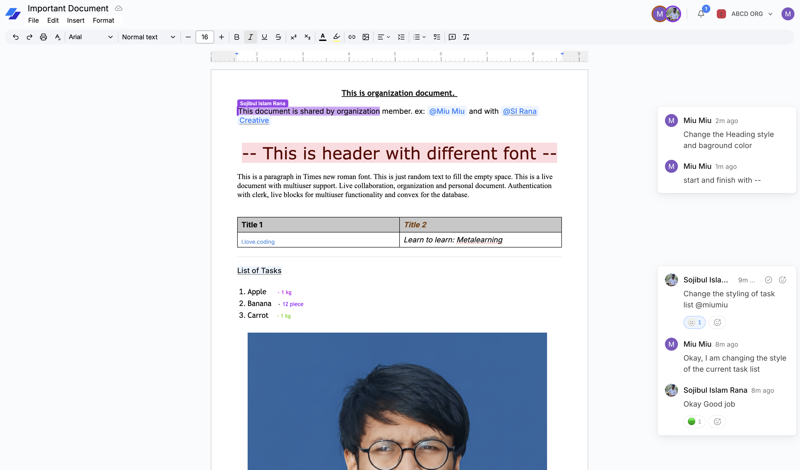

Live Doc — Real-Time Collaborative Document Editor

Main Technology Stack
Next.js
React
TypeScript
Convex Real-Time DB
Clerk Auth
Liveblocks
TipTap Editor
Tailwind CSS
Project Overview
Live Doc is a Google Docs-inspired collaborative workspace designed to enable seamless, low-latency document authoring across distributed teams. The architecture combines real-time multi-user cursor broadcasting, conflict-free state synchronization with Convex, rich document formatting through TipTap, and granular organization-level authorization via Clerk.
Key Features
- Real-Time Collaboration: Concurrent multi-user editing with synchronized cursors and presence indicator avatars.
- Rich Text & Formatting: TipTap editor with headings, code blocks, lists, typography controls, and image embedding.
- Interactive Comments & Mentions: In-document commenting threads with user tag notifications and resolve status.
- Workspace & Organization Hierarchy: Multi-tenant workspaces powered by Clerk organizations.
- Templates & Starter Documents: Ready-made layouts for RFCs, project briefs, and meeting notes.
- File Export: Export documents cleanly to PDF, Markdown, and formatted HTML.
Engineering Challenges & Solutions
- State Synchronization & Latency: Coordinated client-side editor operations with Liveblocks presence and Convex document persistence to eliminate desynchronization and typing lag.
- Typing Performance: Optimized TipTap node extensions and minimized re-renders across the document canvas when multiple remote collaborators are actively editing.
- Secure Access Control: Enforced role-based access checks at the Convex database layer to guarantee document privacy across workspaces.
 View GitHub Code
View GitHub Code